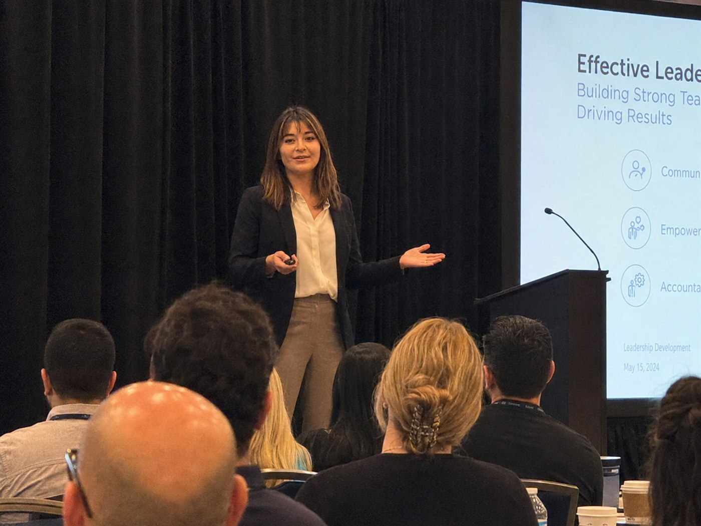

About Danielle
Seven years in store operations still shape how I approach learning.
I spent seven years leading stores before I moved into L&D. It taught me to pay attention to what a job is actually like, not just what the process says it should be like. I still start there.

Career progression
How I got from store operations to global L&D.
GameStop · Store Leadership to District Manager
Progressed through store and district leadership, ultimately leading 28 locations across two states.
Sandbox VR · General Manager
Opened and managed a location, including staffing, daily operations, guest experience, and floor performance.
Field Trainer
Built the first standardized new-store training program and independently led five openings in three months.
Learning & Development Program Manager
Established the curriculum, eLearning workflow, LMS administration, content standards, and opening-support program.
Senior Global L&D Program Manager
Leads global learning programs, the internal AI knowledge assistant, content production, new-store readiness, and program evaluation.
Global reach
Regions supported
I support corporate and franchise teams across North America, Europe, the Middle East, and Asia-Pacific, including Australia.
North AmericaEuropeMiddle EastAsia-PacificAustralia
Working process
How projects usually begin
Most projects begin with store managers, regional trainers, Operations, Deployment, and subject-matter owners describing where the current process breaks down. I use those conversations, available performance data, and the existing tools to define what needs to change and how success will be checked.
I also work with the Senior Vice President of Stores, Directors of Stores, and franchise regional leadership. I do not directly own a budget, but I help evaluate vendor pricing and decisions about where time and resources will have the most impact.
Outside of work
A few things that are actually about me.
I care a lot about my work, but it is not the only interesting thing about me.
Electric unicycles
I am an amateur electric unicycle rider. “Amateur” is doing important work in that sentence.
Magic: The Gathering
I love Magic: The Gathering: the strategy, the weird interactions, and the fact that there is always another deck idea.
Travel
Travel is my favorite thing to do. I am happiest when there is a new place on the calendar.
What comes next
Open to relocation. Eager to travel.
Interested in work that connects global learning strategy, multi-site operations, scalable content, learning technology, and AI-enabled knowledge systems.